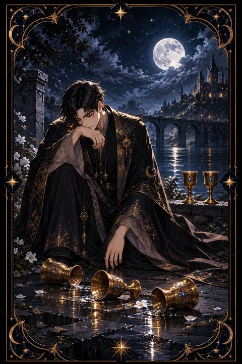

컵 5 카드 — 상실의 슬픔과 남은 희망
컵 5 카드 한눈에 보기
컵 5 카드 상징 읽기

동네보살의 카드 그림은 전통 라이더–웨이트 덱의 뜻을 새 그림으로 옮긴 것입니다. 아래 상징 설명은 전통 덱의 그림을 기준으로 합니다.
검은 망토를 두른 인물이 고개를 숙인 채 발 앞에 쓰러진 세 개의 잔을 바라보고 있습니다. 검은 옷은 애도와 슬픔을 뜻하며 쏟아진 잔에서 흘러나온 붉은 액체와 초록 액체는 잃어버린 감정과 기대를 나타냅니다.
그의 등 뒤에는 아직 쓰러지지 않은 잔 두 개가 서 있습니다. 모든 것을 잃은 것이 아니라 여전히 남아 있는 것이 있다는 사실을 보여 주는 핵심 상징입니다. 그러나 인물은 슬픔에 잠겨 뒤를 돌아보지 못합니다.
멀리 흐르는 강은 슬픔의 흐름이자 건너야 할 감정의 경계입니다. 강 위에 놓인 다리는 상실을 딛고 다른 곳으로 건너갈 길이 있다는 뜻이며 다리 끝의 성이나 집은 다시 돌아갈 안식처를 의미합니다. 흐린 회색 하늘은 무거운 마음을 드러내지만 이 카드는 슬픔이 머무는 곳을 넘어 회복으로 향하는 길까지 함께 그려 두었습니다.
컵 5 카드 정방향 뜻
정방향 컵 5는 무언가를 잃은 뒤의 슬픔과 후회를 뜻합니다. 관계의 끝, 계획의 실패, 기대가 무너진 일처럼 마음이 크게 꺾이는 경험을 한 뒤 그 자리에 머물러 있는 상태입니다. 잘못된 선택을 되돌아보며 자신을 탓하는 마음이 커질 수 있습니다.
이 카드는 슬픔을 부정하라고 말하지 않습니다. 잃은 것을 애도하는 시간은 마음이 회복되기 위해 거쳐야 하는 과정입니다. 다만 쏟아진 잔에만 시선을 두면 뒤에 서 있는 두 잔, 곧 여전히 곁에 있는 사람과 기회를 놓치게 됩니다.
충분히 슬퍼한 뒤에는 천천히 몸을 돌려 남은 것을 확인해 보세요. 믿을 만한 사람에게 이야기를 털어놓거나 감정을 글로 적는 것이 도움이 됩니다. 실패에서 얻은 배움을 한 줄로 정리해 두면 같은 아픔이 반복되는 것을 막을 수 있습니다. 강 위의 다리는 언제든 건널 수 있도록 그 자리에 놓여 있습니다.
컵 5 카드 역방향 뜻
역방향 컵 5는 슬픔을 추스르고 다시 일어서는 흐름을 뜻합니다. 오랫동안 붙잡고 있던 후회와 미련이 조금씩 옅어지고 남아 있는 것의 소중함을 다시 발견하는 때입니다. 떠난 사람이나 지난 실수를 용서하고 자신에게도 너그러워지는 변화가 찾아옵니다.
뒤에 남은 두 잔을 집어 들고 다리를 건너는 장면처럼 새로운 장소, 새로운 관계, 새로운 목표로 발걸음을 옮길 준비가 됩니다. 과거의 상처가 교훈으로 바뀌면서 한층 단단해진 자신을 느낄 수 있습니다.
다만 슬픔을 충분히 들여다보지 않고 서둘러 덮어 두려는 경우에도 이 카드가 역방향으로 나올 수 있습니다. 마음 한구석이 여전히 아프다면 억지로 괜찮은 척하기보다 그 감정을 인정하는 것이 먼저입니다. 회복에는 저마다의 속도가 있으니 남과 비교하지 말고 자신의 걸음으로 건너가면 됩니다.
연애에서 컵 5 카드
솔로라면 지난 연애의 아픔이 아직 마음에 남아 새 사람에게 선뜻 다가서기 망설여지는 때입니다. 과거의 상대와 비교하거나 다시 상처받을까 두려워 다가오는 인연을 밀어내고 있지 않은지 돌아보세요.
연애 중이라면 서운했던 일이나 실망스러운 사건 때문에 관계가 무겁게 느껴질 수 있습니다. 잘못된 부분만 붙들고 있기보다 여전히 함께 지켜 온 좋은 점을 떠올려 보세요. 서로의 상처를 솔직하게 나누는 대화가 관계를 다시 일으키는 힘이 됩니다.
역방향이라면 지난 사랑의 상처가 아물어 가는 흐름입니다. 미련을 내려놓고 나면 새로운 인연을 맞이할 여유가 생기며 연인과도 오해를 풀고 다시 가까워질 수 있습니다. 상처를 억지로 서둘러 덮기보다 천천히 아무는 시간을 허락해 주세요.
재회·속마음 질문에서 컵 5 카드
재회를 묻는 자리에서 컵 5가 나오면 이별의 아픔이 아직 크게 남아 있는 상태를 뜻합니다. 지금 당장 관계를 되돌리기는 쉽지 않으며 상대 역시 지난 일에서 받은 실망을 정리하지 못했을 수 있습니다. 쏟아진 잔을 다시 주워 담으려 애쓰기보다 자신의 마음을 먼저 추스르는 것이 중요합니다. 남은 두 잔처럼 두 사람 사이에 좋은 기억이 남아 있다면 시간이 지난 뒤 차분하게 대화할 기회가 올 수 있습니다. 역방향이라면 감정이 정리되어 편안하게 다시 마주할 수 있는 흐름입니다. 조급한 마음에 연락을 서두르면 서로의 상처가 다시 벌어질 수 있습니다. 먼저 스스로 평온을 되찾는 것이 재회의 첫 단계입니다.
일·금전에서 컵 5 카드
일에서는 기대했던 결과를 얻지 못해 실망한 상황을 나타냅니다. 탈락, 계약 무산, 프로젝트 실패처럼 아쉬운 일이 있었다면 잠시 마음을 추스를 시간이 필요합니다. 그러나 아직 살아 있는 기회와 인맥이 남아 있으니 모든 것을 잃었다고 단정하지 마세요.
금전 면에서는 손실이 생겨 속상할 수 있습니다. 서둘러 만회하려고 무리한 선택을 하기보다 남은 자원을 지키며 원인을 차분히 짚어 보세요. 역방향이라면 손실을 딛고 다시 안정을 찾아가는 흐름입니다. 실패한 일의 원인을 정리해 두면 다음 도전에서 같은 실수를 피할 수 있습니다. 아직 곁에 남은 동료와 거래처는 다시 일어설 소중한 발판입니다. 잃은 것을 셈하기보다 남은 자원을 목록으로 적어 보는 것이 먼저입니다.
컵 5 카드는 예일까 아니오일까
잃은 것에 마음을 빼앗긴 카드라 지금 바라는 일은 기대만큼 풀리기 어렵다는 아니오로 봅니다. 다만 남은 두 잔이 있으니 방향을 바꾸면 다른 길이 열리며 역방향은 회복을 뜻해 조건부에 가깝습니다.
자주 묻는 질문
컵 5 카드 역방향은 나쁜 뜻인가요?
역방향 컵 5는 슬픔을 추스르고 다시 일어서는 흐름을 뜻합니다. 오랫동안 붙잡고 있던 후회와 미련이 조금씩 옅어지고 남아 있는 것의 소중함을 다시 발견하는 때입니다. 떠난 사람이나 지난 실수를 용서하고 자신에게도 너그러워지는 변화가 찾아옵니다.
컵 5 카드가 연애 질문에 나오면요?
솔로라면 지난 연애의 아픔이 아직 마음에 남아 새 사람에게 선뜻 다가서기 망설여지는 때입니다. 과거의 상대와 비교하거나 다시 상처받을까 두려워 다가오는 인연을 밀어내고 있지 않은지 돌아보세요.
타로 카드는 어떻게 뽑나요?
타로 카드 페이지에서 78장을 섞으면 그중 22장이 펼쳐집니다. 마음이 가는 세 장을 고르면 과거·현재·미래 자리에 놓이고, 한 장씩 뒤집어 자리와 방향에 맞는 풀이를 읽습니다. 정방향과 역방향은 섞는 순간 정해집니다.